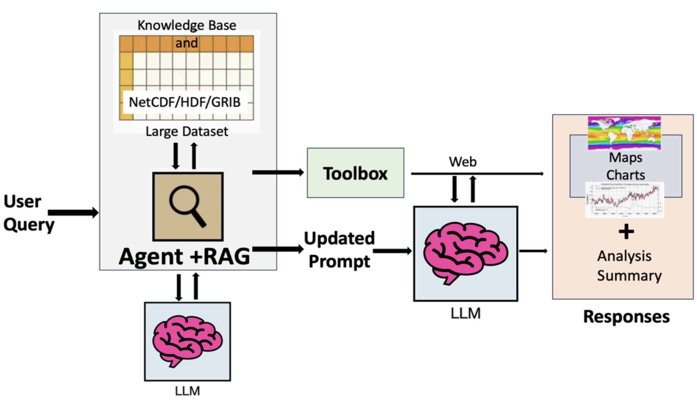
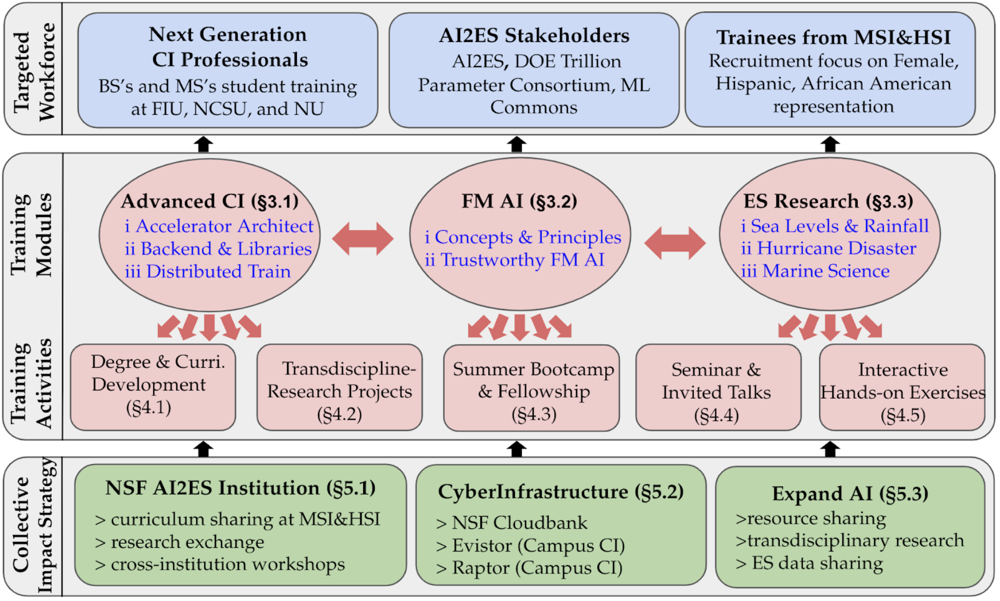
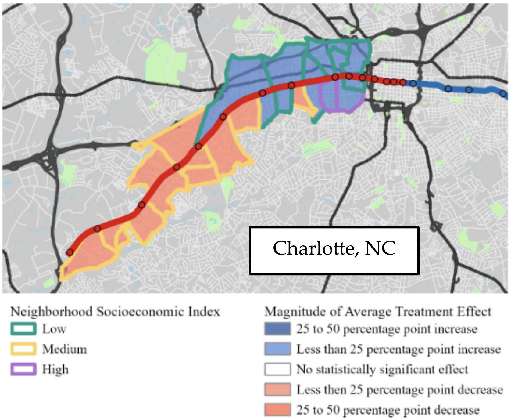
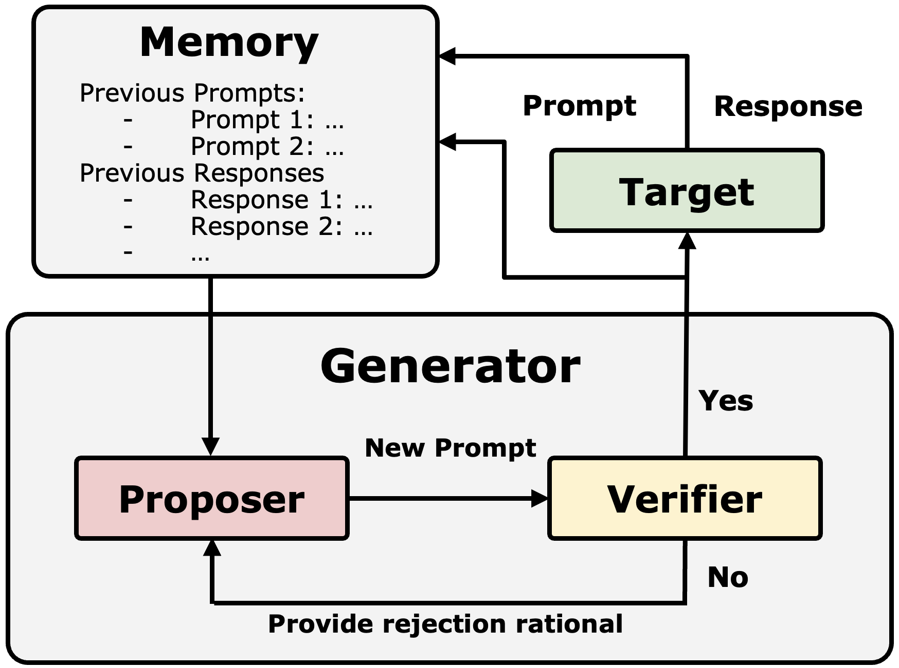

★ Developing Responsible AI Agents for Interpreting and Enhancing Access to Large Environmental Datasets
Project Information
- Program: NC State’s Data Science and AI Academy Seed Grants
- Project period: 12/01/2024 – 06/01/2025
- Principal investigator: Paul Liu (NC State, Marine, Earth, and Atmospheric Sciences)
- Co-Principal investigator: DK Xu (NC State, Artificial Intelligence)
- Co-Principal investigator: Alice Cheng (NC State, Communication)
- Award Amount: $30,000
|
|

|
This project develops advanced LLM (Large Language Model) agents to revolutionize accessibility and analysis of complex environmental datasets. By integrating cutting-edge AI innovations, it bridges the gap between geoscience data formats (e.g., NetCDF, HDF, GRIB, GeoTIFF) and diverse user needs. The project employs context-aware query interpretation via retrieval-augmented generation (RAG) to deliver precise, adaptive responses, leveraging deep learning to optimize accuracy and relevance. It incorporates responsible AI practices, including bias detection, mitigation, explainable AI, and fairness optimization, to ensure ethical and transparent data interpretation. Natural language interfaces enable researchers, policymakers, and the public to interact effortlessly with datasets, without requiring technical expertise. Advanced visualization tools adapt dynamically to data types, empowering intuitive exploration and actionable insights. This interdisciplinary effort democratizes data access, accelerates climate research, and drives responsible, AI-powered decision-making for global impact.
|
★ Collaborative Research: CyberTraining: Implementation: Medium: EcoTern: Pioneering a CI Workforce for Sustainable and Transdisciplinary Environmental Science Research
Project Information
- Award numbers: National Science Foundation (NSF) OAC-2417850
- Project period: 12/01/2024 – 11/30/2027
- NC State Team: Xipeng Shen (PI, Systems), DK Xu (Co-PI, AI), Ruoying "Roy" He (Co-PI, Oceanography)
- FIU Team: Wenqian Dong (PI, HPC), Jayantha Obey (Co-PI, Climate), Jason Liu (Co-PI, Simulation)
- Award Amount: $979,901
|
|

|
The EcoTern project addresses the need for a skilled workforce in environmental science by integrating advanced artificial intelligence (AI) and machine learning (ML) into cyberinfrastructure (CI) training. Led by North Carolina State University and Florida International University, in collaboration with the NSF AI2ES Institute, this initiative focuses on developing comprehensive training activities. These include new degree programs, curriculum enhancements, and hands-on exercises designed to equip trainees with the necessary skills to utilize AI and ML for predicting and mitigating environmental impacts such as coastal flooding and hurricane disasters. EcoTern aims to democratize access to CI by sharing resources and expertise across institutions, fostering a transdisciplinary approach to research. The project involves a broad network of partners, including national labs like ORNL, ANL, PNNL, and industry leaders like Microsoft. EcoTern prepares a diverse and knowledgeable workforce to drive innovation in environmental and computer science research.
|
★ Harnessing Links between Historical Business & Household Microdata and Street-View Images to Assess Transit-Induced Neighborhood Changes at Small Spatial Scales
Project Information
- Award numbers: National Science Foundation (NSF) BCS-2416846
- Project period: 08/15/2024 – 07/31/2027
- Principal investigator: Eleni Bardaka (NC State, Civil Engineering)
- Co-Principal investigator: DK Xu (NC State, Artificial Intelligence)
- Award Amount: $396,600
|
|

|
This project investigates transit-induced gentrification and displacement by merging historical market research microdata with localized data from street-view images, online reviews, and real estate websites. Using advanced AI techniques, including multi-modal learning and large language models (LLMs), the research unveils neighborhood change and migration patterns around transit stations and develops tools for analyzing neighborhood dynamics. Findings can inform policies to mitigate adverse effects on vulnerable businesses and residents, supporting equitable urban development. Unlike previous research, this project integrates multiple data sources to cover all households, businesses, and housing in a region. It expands upon economic analysis and urban gentrification theories by developing data fusion techniques, machine learning models, spatial analysis, and econometric models to capture transit investment impacts. Objectives include identifying vulnerable businesses, establishments likely to replace them, and the socioeconomic profiles of households migrating in or out of station areas. The project examines the accuracy of socioeconomic microdata and develops a framework for using it to understand urban processes.
|
★ Scalable and Adaptable Evaluation of LLMs' Trustworthiness Through Generative Techniques
Project Information
- Program: Microsoft Accelerating Foundation Models Research
- Project period: 01/04/2024 – 06/30/2025
- Principal investigator: DK Xu (NC State, Artificial Intelligence)
- Award Amount: $50,000 (Azure credits + Gift Fund)
|
|

|
This project aims to develop scalable and adaptable methods for assessing the trustworthiness of large language models (LLMs) through generative techniques. Current evaluation methods face two major challenges: the need for extensive evaluation samples and deep domain expertise, which are time-consuming and costly, and the difficulty in transferring evaluation results across different domains, limiting accuracy and adaptability. Our research systematically analyzes these shortcomings and propose an innovative framework that uses generative techniques to create diverse, domain-specific evaluation benchmarks. This framework will adaptively assess various aspects of LLM trustworthiness, including reliability, robustness, fairness, and adaptability, in different contexts. Expected outcomes include the development and validation of a novel evaluation system that ensures the trustworthiness of LLMs in sensitive applications. By addressing these challenges, our research will significantly reduce the time and resources required for comprehensive LLM evaluations, advancing the field of AI and enabling more robust applications in critical areas.
|
*Last updated on 12/11/2024*
|
|